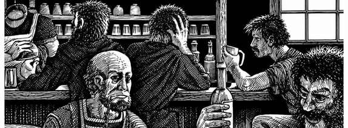
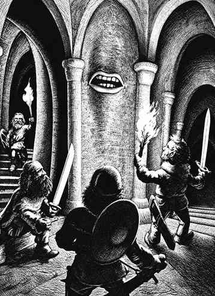

冒险 · The Adventure
冒险时，你很可能会与一名或多名其他角色一同探索地下迷宫，或前往户外地区。地下城主会仔细绘制你们将要进入之地的地图，标出显著地形，并以数字和／或字母标明遭遇地点及特别关注区域。冒险开始前，地下城主会提供一些情报——你们可能向当地居民打听过消息，也可能听闻传言或古老传说——好让队伍为探险做好准备，雇用战士、购买坐骑等，从而尽可能提高在地下城或荒野中成功的机会。
在城市或城镇中活动本身也可能既有趣、增长见闻，又暗藏危险，因此还会出现第三种冒险：城镇冒险。这三种主要冒险各有共通点，也各有不同，故下文分别说明；之后再介绍各种冒险都会涉及的要素。战役裁判掌握详细资料，包括图表、表格和矩阵，足以主持任何类型的冒险。


本节内容
- 章节导读 · Chapter Overview
- 地下城探险 · Dungeon Expeditions
- 户外探索 · Outdoor Exploration
- 城镇冒险 · Town Adventures
- 负重 · Encumbrance
- 移动——时间与距离因素 · Movement — Time & Distance Factors
- 光照 · Light
- 红外视觉 · Infravision
- 紫外视觉 · Ultravision
- 静默移动 · Silent Movement
- 隐形移动 · Invisible Movement
- 突袭 · Surprise
- 陷阱、机关与遭遇 · Traps, Tricks, and Encounters
- 先攻 · Initiative
- 沟通 · Communication
- 谈判 · Negotiation
- 战斗 · Combat
- 战斗程序 · Combat Procedures
- 伤害 · Damage
- 坠落伤害 · Falling Damage
- 治疗 · Healing
- 服从 · Obedience
- 士气 · Morale
- 绘图 · Mapping
- 组织队伍 · Organization